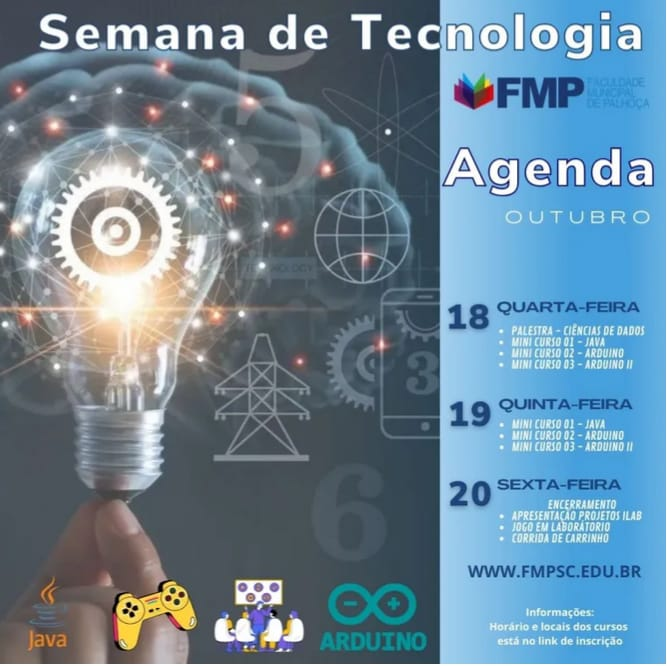

Iniciei os estudos na área de TI em 2014 em um curso técnico de montagem e manutenção de computadores e notebooks com a intenção de trocar de área de trabalho.
Na época eu trabalhava na segurança privada e em 2017 entrei para a faculdade de análise e desenvolvimento de sistemas
na cidade de Capão da Canoa RS.
Em 2019 mudei com minha familia para a cidade de Palhoça SC onde dei continuidade aos estudos na Uniasselvi.
Em 2021 fiz transfêrencia do curso para a faculdade Municipal de Palhoça e retomei os estudos concluindo a graduação
em Dezembro de 2023. Nesse meio tempo trabalhei por quase um ano na equipe de suporte técnico da tecnologia da informação (TI) de uma empresa
de tecnologia e comunicação de Florianópolis.
Atualmente estou fazendo pós graduação em desenvolvimento de sistemas com Java e trabalho
de forma autônoma criando sites e fazendo manutenção de computadores.
Home
Projeto Arcade Bartop:
Liderei a equipe deste projeto com a ideia de fazer a faculdade Municipal de Palhoça (FMP) a primeira faculdade de Palhoça ou talvez de Santa Catarina a ter um arcade gratuito para o entretenimento de alunos e professores durante os intervalos das aulas.
Mini-Curso Java:

Na semana da tecnologia que foi no mês de Outubro de 2023, ministrei um curso básico de dois dias (18 e 19) sobre os fundamentos da linguagem de programação Java para os alunos da primeira a quarta fase do curso de análise e desenvolvimento de sistemas (ADS).
Canal no Youtube
Dark Screen é o nome do projeto que estou desenvolvendo no Youtube com a intenção de ensinar o básico de HTML5 e CSS3 para pessoas que tem interesse de entrar nesse mundo da programação. O foco é evoluir gradativamente
criando novos cursos como de lógica de programação, Conceitos da internet, back-end e banco de dados.